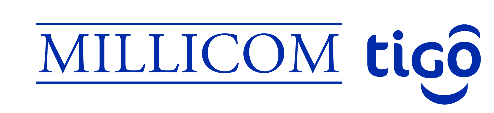

I build the distributed infrastructure that keeps payment platforms, messaging pipelines, and cloud-native products running at scale — without accumulating the operational debt that breaks them later.
Three production systems and the architectural decisions behind each. Metrics are the primary signal — each number links to a specific technical choice.
Real-time CPaaS platform handling voice, WhatsApp, RCS, and OTP delivery across Google, Meta, ConceptoMovil, and Telcel. Built Go microservices with NATS async routing and Redis rulesets on the hot path. Migrated SIP streaming to PJSIP via session bridge — zero-downtime cutover.
Tigo Money / Millicom, GuatemalaBackend EngineerNov 2022 – Jun 2023
Bridged a legacy SOAP/Oracle core banking system to modern digital wallet APIs for Tigo Money Guatemala. Built custom Go plugins for KrakenD API Gateway to normalize legacy responses behind a unified surface. Implemented OAuth2/OIDC with AWS Cognito, multi-device PIN auth with lockout, and serverless fraud checks via Lambda. PCI DSS compliance awareness throughout.
Independent consulting across multiple clients with distributed Go backends running 6-hour CI pipelines. Implemented dependency graph analysis for affected-only builds, remote artifact caching, and pipeline parallelization. Same GitHub Actions quota went from one full build/day to 20+ incremental builds. Right-sized K8s workloads via Terraform audits, reducing cloud infrastructure costs.
Three architectural tradeoffs made in production, with the constraint, the choice, and the measurable outcome.
IPCOM CPaaS→
NATS over Kafka for internal routing
Provider adapters for Google, Meta, and Telcel needed async delivery but didn't need log compaction or replay. NATS gave us sub-millisecond latency with simpler operations — no ZooKeeper, no partition rebalancing. Direct outcome: 1M+ msg/day with lower operational cost than a Kafka cluster would have required for the same throughput.
Tigo Money→
KrakenD as migration seam, not rewrite
The wallet backend had 5+ years of SOAP/XML contracts with no single owner. Rewriting would have blocked features for months. Instead, KrakenD Go plugins normalized legacy responses behind a unified API — new services consumed the gateway, old services kept running. Direct outcome: −30% integration time for new providers, zero regression in existing flows.
Upwork Consulting→
Affected-only builds over monorepo pipelines
Six-hour pipeline runtimes weren't a resource problem — they were a scope problem. Building a dependency graph at CI time meant only changed services and their dependents ran tests and builds. Combined with remote artifact caching, the same GitHub Actions quota went from one full build per day to 20+ incremental builds. Direct outcome: 6h → 20min, same infra budget.
Stack
I architect backend systems for high-stakes environments — fintech payment platforms, real-time CPaaS infrastructure, and cloud-native distributed systems — where concurrency, security, and reliability are non-negotiable. Go is my primary tool. I own the full technical lifecycle: from architecture design to production observability. My focus is eliminating the operational debt that makes distributed systems brittle over time.
Backend engineering roles across fintech, telecom, and platform infrastructure. Each entry links to the same systems referenced in the case studies above.
Backend engineering for distributed systems teams across multiple clients — Go microservices, AI/LLM orchestration backends, CI/CD modernization, and Kubernetes infrastructure on AWS and GCP. Reduced CI/CD pipeline times from 6 hours to 20 minutes via dependency graph analysis and remote artifact caching. Designed and optimized cloud infrastructure using Terraform, cutting costs through right-sized K8s workloads.
GoKubernetesTerraformGCPAWSgRPC
Nov 2024 – May 2025Backend Engineer | CPaaS & Real-Time MessagingIPCOM Telecomunicaciones · Remote · Colombia1M+ msg/day · +50% session stability · −40% DB load · −35% MTTR
High-concurrency backend for an enterprise CPaaS platform handling real-time messaging across RCS, WhatsApp, and OTP channels. Built Go microservices with NATS async routing, Redis distributed caching, and OpenTelemetry tracing. Migrated SIP infrastructure to PJSIP via zero-downtime session bridge. Implemented OPA Policy Generator for RBAC. Reduced MTTR by 35% through distributed tracing and Grafana operational dashboards.
GoNATSRedisGCPKubernetesGrafana

Nov 2022 – Jun 2023Backend Engineer | Fintech & Digital WalletsBYONDIT · Tigo Money (Millicom) · Remote · Panama−30% integration time
Bridged a legacy SOAP/Oracle core banking system to modern digital wallet APIs for Tigo Money Guatemala. Built custom Go plugins for KrakenD API Gateway to normalize legacy responses behind a unified surface. Implemented OAuth2/OIDC with AWS Cognito, multi-device PIN auth with lockout, and serverless fraud checks via Lambda. PCI DSS compliance awareness throughout.
GoKrakenDAWSLambdaCognitoOpenTelemetry
Jun 2020 – Nov 2020Software QA Tester | Quality Assurance & TestingElemento 43 · Internship · Cartagena, Colombia−25% defect rate
Automated end-to-end and API test suites using Cypress, Cucumber (BDD), and Postman. Integrated regression suites into CI/CD pipelines. Reduced pre-production defect rate by 25%.
CypressCucumberPostmanCI/CD
Certifications
AWS Academy Cloud Developing
Amazon Web Services
Feb 2026
Programming with Google Go
UC Irvine / Coursera
Mar 2026
AWS Certified Cloud Practitioner
TIDWIT
Dec 2025
Cybersecurity Fundamentals
IBM
Jun 2025
Scrum Foundation Professional Certificate
CertiProf
Nov 2025
Data Analysis Using PySpark
Coursera
2025
Domain-Driven Design
LinkedIn Learning
2022
Education
B.S. Systems Engineering
Tecnológico Comfenalco · Academically completed
Expected Oct 2026
Diploma in Data & Information Analytics
Tecnológico Comfenalco · In progress
Expected Jul 2026
Software Development Technologist
Tecnológico Comfenalco · 104 credits completed
2024
Associate's in Software Programming
SENA · Completed
2017
Contact
If you're scaling a distributed backend and the infrastructure is becoming the bottleneck — payment processing, messaging pipelines, cloud costs growing faster than usage — that's a good reason to talk.
01
15-minute call
You describe the system and the problem. I ask the questions that define scope and whether I can actually help.
02
Architecture audit
I review current state — services, infra, CI/CD, cloud spend — and identify the real bottleneck, not the visible symptom.
03
Proposal
Concrete scope, timeline, and engagement structure. No retainer until there's agreement on the problem definition.